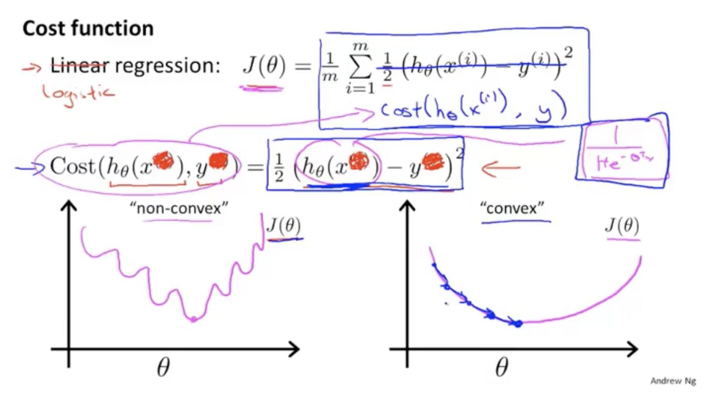
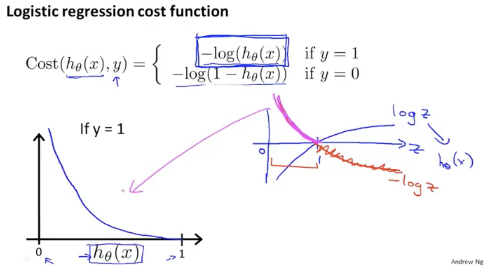
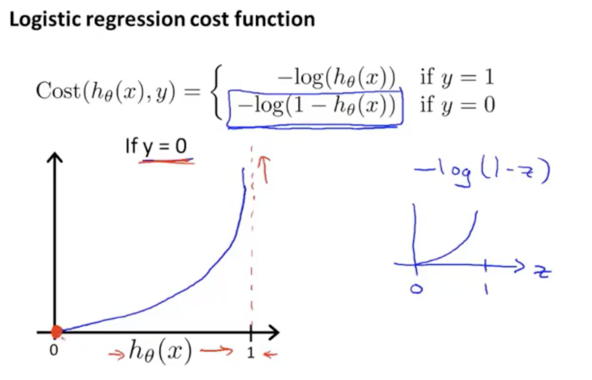

1. Linear Regression¶
1.1 线性模型¶
$$f(x) = w^Tx$$
1.2 拟合线性模型的损失函数¶
平方损失：
$$\frac{1}{m}\sum_{n=1}^{m} \frac{1}{2} \left ( f(x^{(n)}) - y^{(n)} \right )^2$$
什么是最小二乘法？
基于平方损失误差最小化进行模型求解的方法称为最小二乘法。在线性模型中，最小二乘法就是试图找到一条直线，使得所有样本到直线上的欧式距离之和最小。
平方损失函数是连续可微的凸函数，存在全局最小值，可以通过梯度下降法求解最优值。
2. Logistic Regression¶
2.1 逻辑回归模型¶
Sigmoid函数:
$$ f(x) = \frac{1}{1+e^{-z}} $$
2.2 拟合逻辑回归模型的损失函数¶
$$-\frac{1}{m}\left [ \sum_{i=1}^{m} y^{(i)}logf(x^{(i)}) + (1-y^{(i)})log(1-f(x^{(i)})) \right ], \ \ f(x)为逻辑模型$$
逻辑回归解决的是分类问题，是广义线性模型，在线性模型\(z=w^Tx\)上套一层sigmoid函数。
2.3 LR模型的损失函数可以使用线性模型的平方损失函数吗？¶
不可以，将LR模型非线性的sigmoid函数带入平方损失函数f(x)得到的是一个非凸函数，存在若干个局部最小值，无法利用梯度下降法求解最优值问题。

2.3 LR模型的损失函数如何推导?¶

图像性质：
- 如果标签y=1，预测值h(x)也为1，此时的损失值最小为0；当h(x)趋向0时，损失值趋近于无穷大。所以，预测值h(x)与y越接近，损失值越趋向于0。

- case y=0: 反之，预测值h(x)接近标签y值0，则损失值收敛与0。
2.4 损失函数的紧凑形式是什么？为什么是这种形式？¶
$$-\frac{1}{m}\left [ \sum_{i=1}^{m} y^{(i)}logf(x^{(i)}) + (1-y^{(i)})log(1-f(x^{(i)})) \right ], \ \ f(x)为逻辑模型$$
损失函数是统计学中的极大似然估计推导而来，是统计学中为不同模型快速寻找参数的方法。同时拥有一个比较好的性质，是凸函数。
Comments